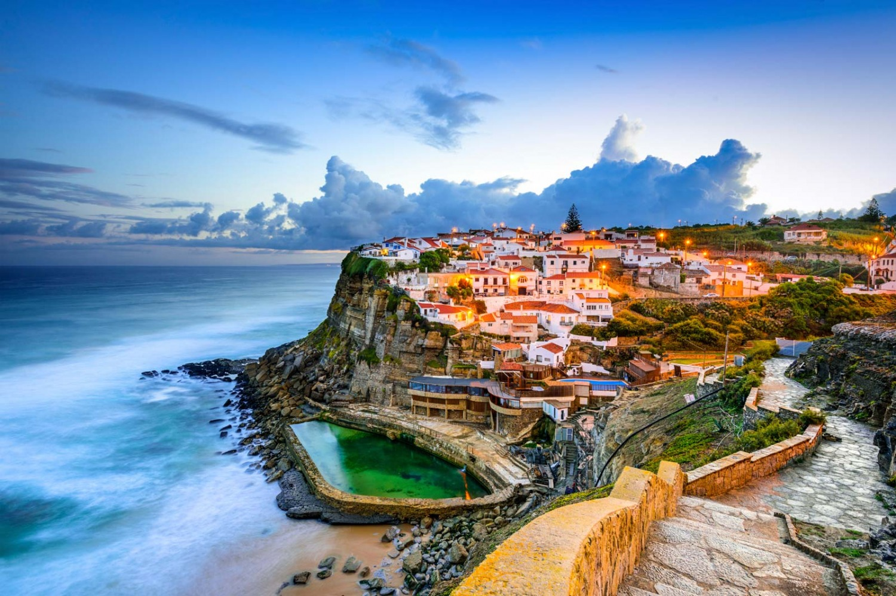
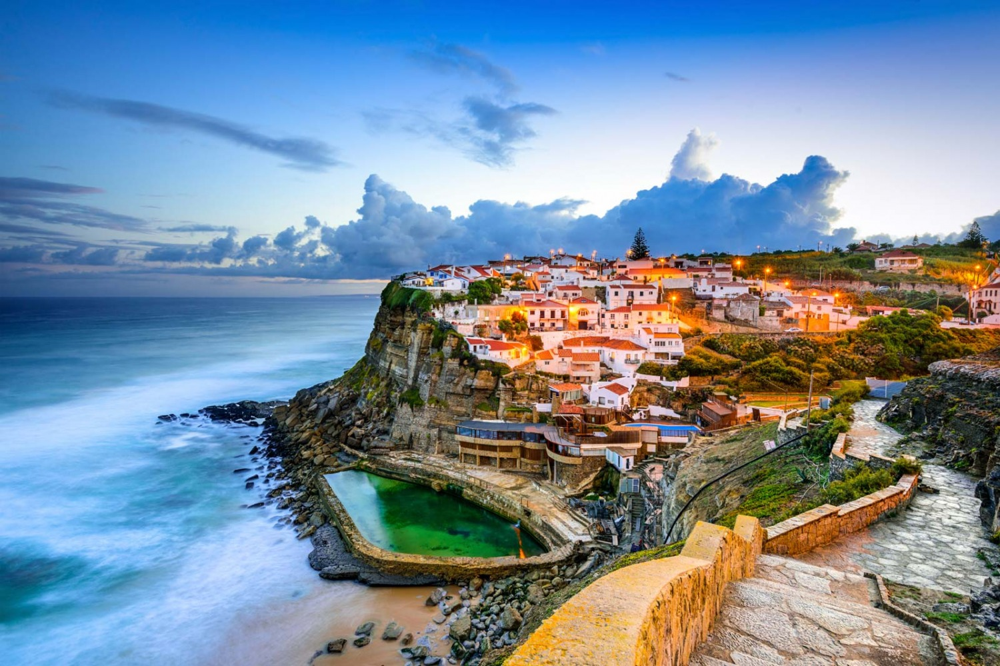

Christmas soon...
This holiday means a lot for all people in the world! Because of it’s vibe, you can spent your time with your family, share presents or help with Christmas dinner. The best time to spend your time in family circle it is definitely Christmas time. A lot of people around the world wait for this moment.
In this blog I want to tell you about my last experience in celebrating Christmas. Last year I was in trip around Europe, to be honest, It was the best experience and emotions that I felt. You can extend your horizon, take a beautiful photo of nature. I was in Czechia, Austria, Switzerland, France, Poland, Liechtenstein. The most beautiful country in this list is obvious Switzerland. Switzerland it’s the country with beautiful nature, Alps mountains, gorgeous waterfalls and kind people. Of course, Switzerland is famous for nature beauty and chocolate. I celebrated New Year in Basel, it was the best New Year in my entire life, because I really like to travel around the world. Speak with people in another language.
Look at this incredible pictures, which I made in Switzerland.


Austria takes second place. Also beautiful nature and beautiful architecture, unfortunately, we were not in Vienna. I want to travel to Vienna on next holiday in winter, because for me, it is the best time to travel somewhere. Regardless of it, Austria still beautiful country with outstanding nature. If we talk about props and cons, I can highlight that I can practise my German language there, it was good experience for me. Although there are a lot of pluses, you can find minuses easily, because of que everywhere you walk, there are a lot of people or homeless people like in every European country.
But I made some cool photos, when I was in Austria.
You can see this photo below: